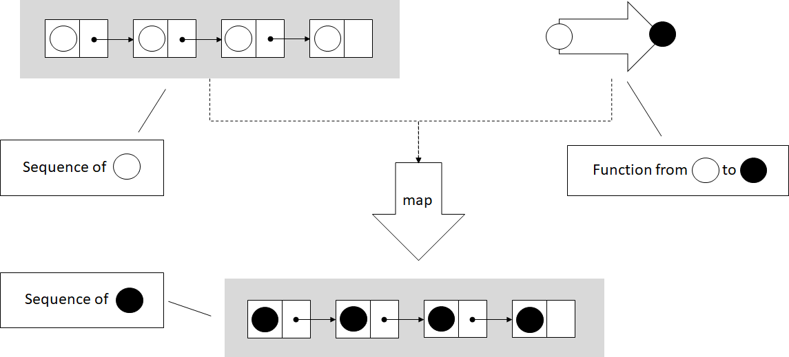
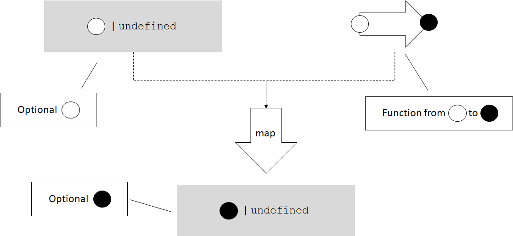
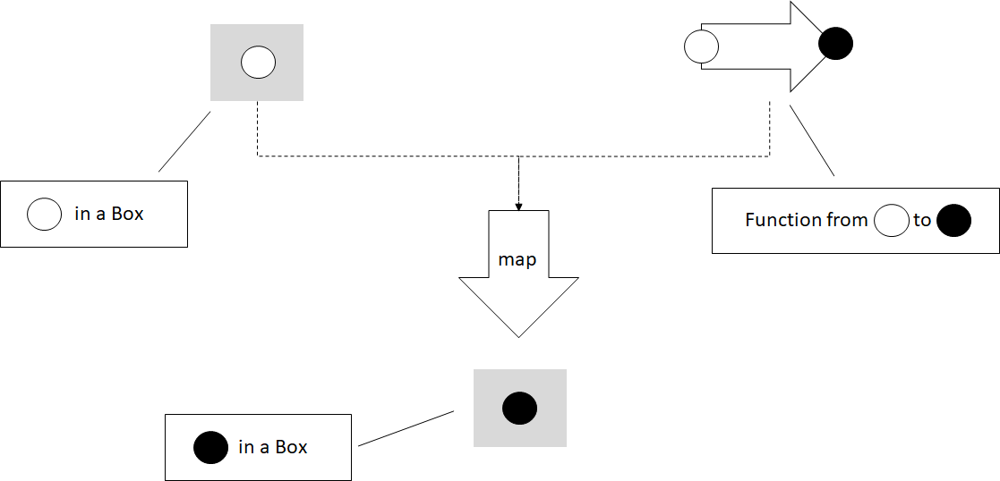
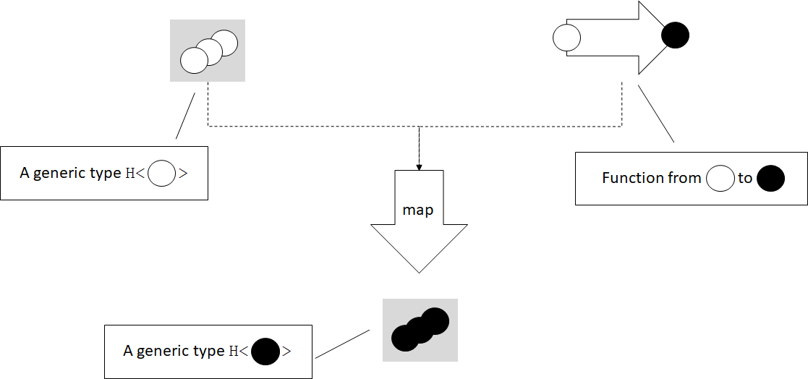
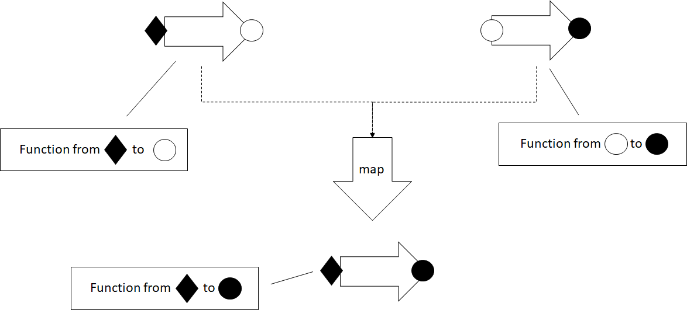

Higher Kinded Types: Functors
This blog post is an excerpt from my book, Programming with Types. The code samples are in TypeScript. If you enjoy the article, you can use the discount code vlri40 for a 40% discount on the book.
An Even More General Map
In the previous post we saw a generic map() implementation working on iterators. Iterators abstract data structure traversal, so map() can apply a function to elements in any data structure.
In the figure, map() takes an iterator over a sequence, in this case a list of circles, and a function which transforms a circle. map() applies the function to each element in the sequence, and produces a new sequence with the transformed elements.
function* map<T, U>(
iter: Iterable<T>,
func: (item: T) => U): IterableIterator<U> {
for (const value of iter) {
yield func(value);
}
}
This implementation works on iterators, but we should be able to apply a function of the form (item: T) => U to other types too. Let’s take, as an example, an Optional<T> type:
class Optional<T> {
private value: T | undefined;
private assigned: boolean;
constructor(value?: T) {
if (value) {
this.value = value;
this.assigned = true;
} else {
this.value = undefined;
this.assigned = false;
}
}
hasValue(): boolean {
return this.assigned;
}
getValue(): T {
if (!this.assigned) throw Error();
return <T>this.value;
}
}
It feels natural to be able to map a function (value: T) => U over an Optional<T>. If the optional contains a value of type T, mapping the function over it should return an Optional<U> containing the result of applying the function. On the other hand, if the optional doesn’t contain a value, mapping would result in an empty Optional<U>.
Let’s sketch out an implementation for this. We’ll put this function in a namespace. Since TypeScript doesn’t support function overloading, in order to have multiple functions with the same name, we need this so the compiler can determine which function we are calling. Here’s the Optional<T> map() implementation:
namespace Optional {
export function map<T, U>(
optional: Optional<T>,
func: (value: T) => U): Optional<U> {
if (optional.hasValue()) {
return new Optional<U>(func(optional.getValue()));
} else {
return new Optional<U>();
}
}
}
export simply makes the function visible outside the namespace. If the optional has a value, we extract it, pass it to func(), and use its result to initialize an Optional<U>. If the optional is empty, we create a new empty Optional<U>.
We can do something very similar with the TypeScript sum type T or undefined. The Optional<T> we just saw is a DIY version of such a type that works even in languages which don’t support sum types natively, but TypeScript does. Let’s see how we can map over a “native” optional type T | undefined.
Mapping a function (value: T) => U over T | undefined should apply the function and return its result if we have a value of type T, or return undefined if we start with undefined:
namespace SumType {
export function map<T, U>(
value: T | undefined,
func: (value: T) => U): U | undefined {
if (value == undefined) {
return undefined;
} else {
return func(value);
}
}
}
These types can’t be iterated over, but it still makes sense for a map() function to exist for them. Let’s define another simple generic type, Box<T>. This type simply wraps a value of type T:
class Box<T> {
value: T;
constructor(value: T) {
this.value = value;
}
}
Can we map a function (value: T) => U over this type? We can. As you might have guessed, map() for Box<T> would return a Box<U>: it will take the value T out of Box<T>, apply the function to it, and put the result back into a Box<U>.
namespace Box {
export function map<T, U>(
box: Box<T>,
func: (value: T) => U): Box<U> {
return new Box<U>(func(box.value));
}
}
There are many generic types over which we can map functions. Why is this useful? It’s useful because map(), just like iterators, provides another way to decouple types which store data from functions which operate on that data.
Processing Results or Propagating Errors
As a concrete example, let’s take a couple of functions which process a numerical value. We’ll implement a simple square(), a function which takes a number as an argument and returns its square. We’ll also implement stringify(), a function which takes a number as an argument and returns its string representation:
function square(value: number): number {
return value ** 2;
}
function stringify(value: number): string {
return value.toString();
}
Now let’s say we have a function readNumber(), which reads a numeric value from a file. Since we are dealing with input, we might run into some problems: what if the file doesn’t exist or can’t be opened? In that case, readNumber() will return undefined. We won’t look at the implementation of this function, the important thing for our example is its return type:
function readNumber(): number | undefined {
/* Implementation omitted */
}
If we want to read a number and process it by applying square() to it first, then stringify(), we need to ensure we actually have a numerical value as opposed to undefined. A possible implementation is to convert from number | undefined to just number using if statements wherever needed:
function process(): string | undefined {
let value: number | undefined = readNumber();
if (value == undefined) return undefined;
return stringify(square(value));
}
We have two functions that operate on numbers, but since our input can also be undefined, we need to explicitly handle that case. This is not particularly bad, but in general the less branching our code has, the less complex it is. It is easier to understand, to maintain, and there are less opportunities for bugs. Another way to look at this is that process() itself simply propagates undefined, it doesn’t do anything useful with it. It would be better if we can keep process() responsible for processing, and let someone else handle error cases. How can we do this? With the map() we implemented for sum types:
namespace SumType {
export function map<T, U>(
value: T | undefined,
func: (value: T) => U): U | undefined {
if (value == undefined) {
return undefined;
} else {
return func(value);
}
}
}
function process(): string | undefined {
let value: number | undefined = readNumber();
let squaredValue = SumType.map(value, square);
return SumType.map(squaredValue, stringify);
}
Instead of explicitly checking for undefined, we call map() to apply square() on the value. If it is undefined, map() will give us back undefined. Just like with square(), we map() our stringify() function on the squaredValue. If it is undefined, map() will return undefined.
Now our process() implementation has no branching – the responsibility of unpacking number | undefined into a number and checking for undefined is handled by map(). map() is generic and can be used across many other types (like string | undefined) and in many other processing functions.
In our case, since square() is guaranteed to return a number, we can create a small lambda which chains square() and stringify(), and pass that to map():
function process(): string | undefined {
let value: number | undefined = readNumber();
return SumType.map(value,
(value: number) => stringify(square(value)));
}
This is a functional implementation of process(), in which the error propagation is delegated to map(). We’ll talk more about error handling in a later blog post, when we will discuss monads. For now, let’s look at another application of map().
Mix-and-match Function Application
Without the map() family of functions, if we have a square() function which squares a number, we would have to implement some additional logic to get a number from a number | undefined sum type. Similarly, we would have to implement some additional logic to get a value from a Box<number>, and package it back in a Box<number>:
function squareSumType(value: number | undefined)
: number | undefined {
if (value == undefined) return undefined;
return square(value);
}
function squareBox(box: Box<number>): Box<number> {
return new Box(square(box.value));
}
So far this isn’t too bad. But what if we want something similar with stringify()? We’ll again end up writing two functions which look a lot like the previous ones:
function stringifySumType(value: number | undefined)
: string | undefined {
if (value == undefined) return undefined;
return stringify(value);
}
function stringifyBox(box: Box<number>): Box<string> {
return new Box(stringify(box.value))
}
This starts to look like duplicate code, which is never good. If we have map() functions available for number | undefined and Box, they provide the abstraction to remove the duplicate code. We can pass either square() or stringify() to either SumType.map() or to Box.map(), no additional code needed:
let x: number | undefined = 1;
let y: Box<number> = new Box(42);
console.log(SumType.map(x, stringify));
console.log(Box.map(y, stringify));
console.log(SumType.map(x, square));
console.log(Box.map(y, square));
Now let’s define this family of map() functions.
Functors and Higher Kinded Types
What we just talked about in this section are functors.
A functor is a generalization of functions that perform mapping operations. For any generic type like Box<T>, a map() operation which takes a Box<T> and a function from T to U and produces a Box<U> is a functor.
In the figure we have a generic type H which contains 0, 1, or more values of some type T, and a function from T to U. In this case T is an empty circle and U is a full circle. The map() functor unpacks the T or Ts from the H<T> instance, applies the function, then places the result back into an H<U>.
Functors are extremely powerful concepts, but most mainstream languages do not have a good way to express them. That’s because the general definition of a functor relies on higher kinded types.
A generic type is a type which has a type parameter, for example a generic type T, or a type like Box<T>, have a type parameter T. A higher kinded type, just like a higher-order function, represents a type parameter with another type parameter. For example, T<U> or Box<T<U>>, have a type parameter T which, in turn, has a type parameter U.
Since we don’t have a good way to express higher kinded types in TypeScript, C#, or Java, we can’t define a construct using the type system to express a functor. Languages like Haskell and Idris, with more powerful type systems, make these definitions possible. In our case though, since we can’t enforce this capability through the type system, we can think of it more as a pattern.
We can say a functor is any type H with a type parameter T (H<T>) for which we have a function map() which takes an argument of type H<T>, and a function from T to U, and returns a value of type H<U>.
Alternately, if we want to be more object-oriented, we can make map() a member function and say H<T> is a functor if it has a method map() which takes a function from T to U and returns a value of type H<U>.
To see exactly where the type system is lacking, we can try to sketch out an interface for it. Let’s call this interface Functor and have it declare map():
interface Functor<T> {
map<U>(func: (value: T) => U): Functor<U>;
}
We can update Box<T> to implement this interface:
class Box<T> implements Functor<T> {
value: T;
constructor(value: T) {
this.value = value;
}
map<U>(func: (value: T) => U): Box<U> {
return new Box(func(this.value));
}
}
This code compiles, the only problem is that it isn’t specific enough. Calling map() on Box<T> returns an instance of type Box<U>. But if we work with Functor interfaces, we see that the map() declaration specifies it returns a Functor<U>, not a Box<U>. This isn’t specific enough. We need a way to specify, when we declare the interface, exactly what the return type of map() will be (in this case Box<U>).
We would like to be able to say “this interface will be implemented by a type H with a type argument T”. The following code shows how this declaration would look like if TypeScript supported higher kinded types. It obviously doesn’t compile:
interface Functor<H<T>> {
map<U>(func: (value: T) => U): H<U>;
}
class Box<T> implements Functor<Box<T>> {
value: T;
constructor(value: T) {
this.value = value;
}
map<U>(func: (value: T) => U): Box<U> {
return new Box(func(this.value));
}
}
Lacking this, let’s just think of our map() implementations as a pattern for applying functions to generic types, or “values in some box”.
Functors for Functions
Note that we also have functors over functions. Given a function with any number of arguments that returns a value of type T, we can map a function which takes a T and produces a U over it, and end up with a function which takes the same inputs as the original function and returns a value of type U. map() in this case is simply function composition.
Mapping a function over another function composes the two functions. The result is a function which takes the same arguments as the original function and returns a value of the second function’s return type. The two functions need to be compatible – the second function must expect an argument of the same type as the one returned by the original function.
As an example, let’s take a function which takes two arguments of type T, and produces a value of type T and implement its corresponding map(). This will return a function which takes two arguments of type T and returns a value of type U:
namespace Function {
export function map<T, U>(
f: (arg1: T, arg2: T) => T,
func: (value: T) => U): (arg1: T, arg2: T) => U {
return (arg1: T, arg2: T) => func(f(arg1, arg2));
}
}
map() takes a function (T, T) => T, and a function T => U to map over it. It returns a lambda function (T, T) => U.
Let’s map stringify() over a function add(), which takes two numbers and returns their sum. The result is a function which takes two numbers and returns a string, the stringified result of adding the two numbers:
function add(x: number, y: number): number {
return x + y;
}
function stringify(value: number): string {
return value.toString();
}
const result: string = Function.map(add, stringify)(40, 2);
Summary
- map() generalizes beyond iterators, to other generic types
- Functors encapsulate data “unboxing”, with applications in composition and error propagation
- With higher kinded types, we can express constructs like functors using generics which themselves have type parameters